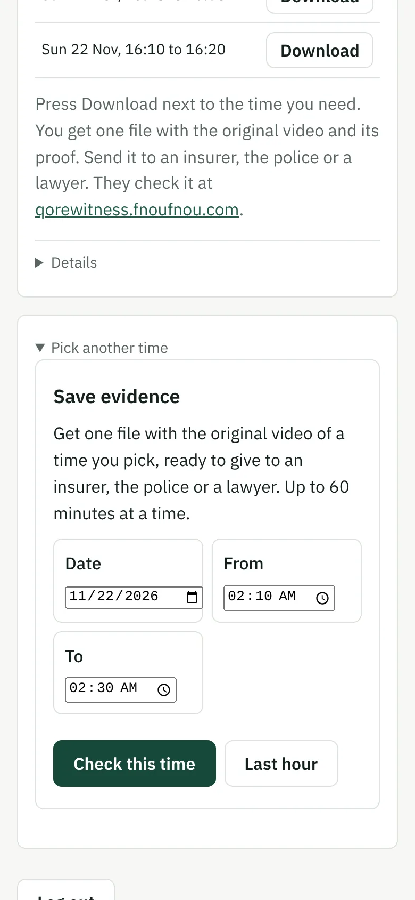
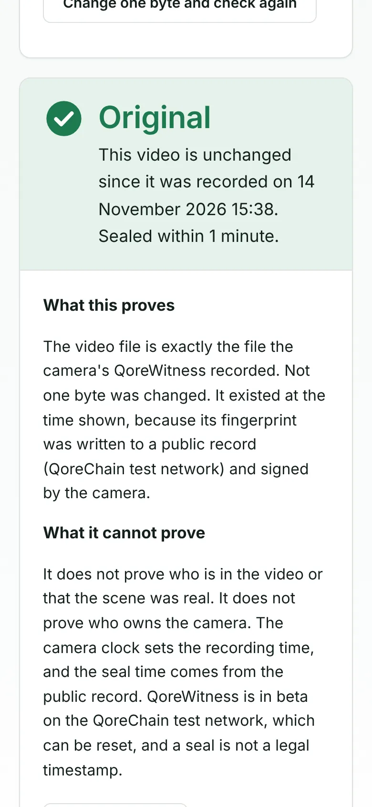

Prove a video
Share a video, and let anyone confirm it's the original.
If you ever need to provide video evidence, just share the clip with its QoreWitness seal. Anyone can verify the seal and confirm the video is untouched, online, in seconds.
If you share a video
Save your evidence.
- Open your dashboard.
- Press Download next to the time you need, or press Save evidence and pick a time range.
- You get one evidence file with the video and its receipts. Send it to whoever needs it, such as an insurer or a lawyer.


Do this in good time, because QoreWitness keeps about two weeks of video.
A message you can send with the file
Subject: Video evidence with a QoreWitness seal
Hello,
Attached is a file from my home camera with the video and its seal.
QoreWitness sealed this footage as it was recorded.
To check it:
1. Open QoreWitness Verify: https://qorewitness.fnoufnou.com/verifier.html
2. Press "Choose files" and pick the evidence file, or drop it on the page.
3. A green "Original" confirms that the video has not been modified since it was sealed.
The check runs in your own browser, so you do not need to take my word for it, or anyone else's.
Please note that the video shows people, and handle it with care.If you received a video
Check it with QoreWitness Verify.
Use our online verification service to check that a video was recorded when it claims to have been, and that it has not been modified since. You need no account and no software, and your file never leaves your computer.
- Open QoreWitness Verify.
- Press Choose files and pick the evidence file, or simply drop it on the page.
- Read the result. A green Original means the video has not been modified since it was sealed.

What the result looks like
- The file is exactly the one the camera's QoreWitness recorded, down to the last byte
- Its fingerprint is on the public ledger, signed by the camera
A button under the result prints it for your records.
See it for yourself
Download our sealed sample recording, a generated test pattern, together with its receipt, then choose both files in QoreWitness Verify or drop them on the page. Then use the button there to change a single byte and check again: the result turns red.
What a green result means
- The video existed at the time recorded on the public ledger.
- It has not been modified since it was sealed.
- One known camera made the seal.
An orange Original, with notes means the video is unchanged too, and the page explains the notes, for example a few minutes when the camera was off.
What it does not mean
- That the scene was real. A staged scene is sealed in exactly the same way.
- That a court will accept it. A court decides for itself how much weight to give it.
A red result is a broken seal. Nobody has to trust the sender or us, and the code is open for anyone to read.